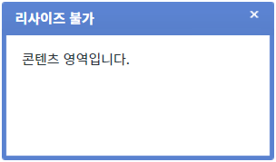
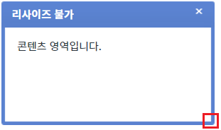
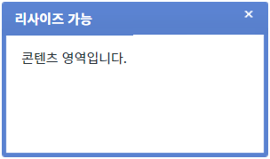
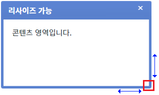

속성 'dragResizable'의 설정을 통해 'FloatingLayer'의 리사이즈 기능을 적용하는 예제입니다. (사용자가 'FloatingLayer'의 오른쪽 하단 영역을 마우스로 드래그하여 크기를 조절할 수 있습니다.)
설정 값에 따른 동작은 다음과 같습니다. - "false" : [default] 리사이즈 기능을 사용하지 않습니다. - "true" : 리사이즈 기능을 사용합니다. 사용자가 'FloatingLayer'의 오른쪽 하단 영역을 마우스로 드래그하여 크기를 조절할 수 있습니다.
- 'FloatingLayer'의 위치는 절대 값으로(display:absolute) 콘텐츠의 길이에 따라 위치가 변경되지 않습니다.
- 이 예제는 마우스 사용이 가능한 환경에서 정상 동작합니다.
리사이즈 기능 사용하지 않기
리사이즈 기능 사용하기
STEP 1. 리사이즈 기능을 사용하지 않은 'FloatingLayer'를 표시합니다.
예제 영역 [(기본 설정) 리사이즈 기능 사용하지 않기]의 버튼 1.1 FloatingLayer 표시하기를 클릭합니다.
STEP 2. 실행된 결과를 확인합니다.
'FloatingLayer'가 버튼 하단에 표시됩니다. 타이틀은 '리사이즈 불가'입니다.
그림 1.브라우저(Chrome) 실행 예시

STEP 3. 우측 하단의 영역을 마우스로 드래그합니다.
그림 2.브라우저(Chrome) 실행 예시

STEP 4. 실행된 결과를 확인합니다.
마우스 드래그를 이용해 리사이즈 할 수 없습니다.
STEP 1. 리사이즈 기능이 적용된 'FloatingLayer'를 표시합니다.
예제 영역 [리사이즈 기능 사용하기]의 버튼 2.1 FloatingLayer 표시하기를 클릭합니다.
STEP 2. 실행된 결과를 확인합니다.
'FloatingLayer'가 버튼 하단에 표시됩니다. 타이틀은 '리사이즈 가능'입니다.
그림 3.브라우저(Chrome) 실행 예시

STEP 3. 우측 하단의 영역을 마우스로 드래그합니다.
그림 4.브라우저(Chrome) 실행 예시

STEP 4. 실행된 결과를 확인합니다.
마우스 드래그를 이용해 리사이즈 할 수 있습니다.
속성을 정의합니다.
[필수] dragResizable="설정 값"
(설정 값)
- false : [default] 리사이즈 기능을 사용하지 않습니다.
- true : 리사이즈 기능을 사용합니다. 사용자가 'FloatingLayer'의 오른쪽 하단 영역을 마우스로 드래그하여 크기를 조절할 수 있습니다.
dragResizable